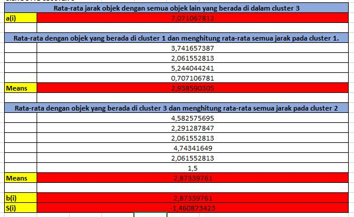

Assalamualaikum wr wb¶
Algoritma K-Mean Clustering & K-Nearest Neighbors¶
Algoritma K-Mean Clustering¶
K-Mean Clustering adalah suatu metode penganalisaan data atau metode dalam Data Mining yang melakukan sebuah proses pemodelan tanpa supervise (unsupervised) dan merupakan salah satu metode yang melakukan pengelompokan data dengan sistem partisi.

K-Mean Clustering ini sendiri, merupakan salah satu metode data clustering yang masuk pada jenis pengelompokan hierarchical atau Partitional Clustering. Dengan kata lain, metode K-Mean Clustering bertujuan untuk meminimalisasikan objective function yang diset dalam proses clustering dengan cara meminimalkan variasi antar data yang ada di dalam suatu cluster dan memaksimalkan variasi dengan data yang ada di cluster lainnya.
Tahapan Perhitungan K-Mean Clustering¶
Terdapat 4 langkah dalam melakukan K-Mean Clustering pada suatu data. Untuk lebih jelasnya langsung saja kita implementasikan. Disini kita akan menggunakan Microsoft Excel sebagai tools untuk menyelesaikan kasus. Data yang akan kita gunakan terdiri dari 4 kolom, 1 kolom utama dan 3 kolom variable, yang masing-masing dari kolom tersebut terdapat 7 record. Seperti pada gambar berikut :
Selanjutnya kita akan masuk pada tahapan perhitungan K-Mean, sebagai berikut :
[ TAHAP 1 ]
Menentukan centroid secara acak. Centroid adalah titik data sebagai pusat cluster. Dalam data ini kita menggunakan 3 centroid.
Sehingga didapatkan data dari tabel individu, sebagai berikut
[ TAHAP 2 ]
Selanjutnya, menghitung jarak ke masing masing pusat cluster atau centroid. Karna menggunakan Microsoft Excel bisa menggunakan rumus sebagai berikut :
=SQRT((k-xi)^2+ (k-xj)^2)+ … +(k-xn)^2)Keterangan
SQRT : rumus akar pada excel
K : cluster
X : objek yang dipilih
Rumus tersebut masukkan ke row pada tabel baru yaitu tabel menghitung jarak. Seperti contoh :
Data tersebut, didapatkan dari tabel yang telah dipilih sebagai cluster. Seperti pada gambar berikut :
Keterangan :
Variabel 1, Individu 1 = B2. Variabel 1, Individu 2 = B3.
Variabel 2, Individu 1 = C2. Variabel 2, Individu 2 = C3.
Variabel 3, Individu 1 = D2. Variabel 3, Individu 2 = D3.
Masukan rumus pada semua row, sesuai dengan ke masing masing pusat cluster atau centroid. Kemudian berikan tanda pada tabel yang memiliki jarak terdekat. Jarak terdekat dipilih dari hasil yang paling mendekati 0. Seperti pada gambar berikut :
Dari tabel tersebut dapat di tarik kesimpulan, bahwa ada tiga cluster dengan anggota sebagai berikut :{(1,2), (4,5,6), (3,7)}.
[ TAHAP 3 ]
Selanjutnya hitung rata rata dari anggota cluster, dengan rumus pada Microsoft Excel sebagai berikut :
Sehingga, menghasil data sebagai berikut :
Kemudian, gunakan hasil rata-rata itu untuk menentukan pusat cluster baru. Di dalam Microsoft excel bisa gunakan rumus sebagai berikut :
Masukkan rumus ke row pada tabel baru yaitu tabel cluster baru. Sehingga, didapatkan hasil seperti gambar dibawah :
[ TAHAP 4 ]
Dalam tabel cluster baru, ulangi langkah 2 dan 3 (diatas). Dikarenakan pada tabel cluster baru tidak ada dari anggota setiap cluster yang berubah pada tempat kelompoknya maka tidak ada perulangan langkah 2 dan 3. Apalila ada perubahan maka langkah 2 dan langkah 3 akan tetap diulangi, hingga data tidak berubah.
Menentukan Jumlah Cluster¶
Kemudian untuk manjumlahkan kita bisa gunakan rumus jumlah cluster, dengan cara membagi hasil dari jarak intra cluster dan jarak inter cluster.
Implementasi dari studi studi kasus diatas, dengan Microsoft Excel :
Menghitung Silhoutte¶
Silhouette digunakan untuk melihat kualitas dan kekuatan cluster, seberapa baik suatu objek ditempatkan dalam suatu cluster. Metode ini merupakan gabungan dari metode cohesion dan separation.
Berikut adalah tahapan perhitungan silhouette :
[ Tahap 1 ]
Hitung rata-rata jarak objek dengan semua objek yang berada di dalam satu cluster dengan persamaan :
Dengan penyelesaian menggunakan Microsoft Excel dengan rumus sebagai berikut :
[ Tahap 2 ]
Hitung rata-rata jarak objek dengan semua objek lain yang berada pada cluster lain, dengan persamaan :
Penyelesaian menghitung jarak menggunakan Microsoft Excel dengan rumus sebagai berikut :
Kemudian, menghitung rata-rata jarak dalam Microsoft Excel bisa gunakan rumus sebagai berikut :
Selanjutnya, hasil untuk mendapat nilai bi maka cari nilai rata-rata antar cluster yang paling minimum.
Hitung nilai silhouette coefficient, dengan penyelesaian menggunakan Microsoft Excel dengan rumus sebagai berikut :
Hasil Implementasi Pada Microsoft Excel
[ Shilhoutte Cluster 1 ]
Hasil nilai Silhouette Coefficient adalah mendekati 1 maka pengelompokan data didalam cluster 1 bersifat baik.
[ Shilhoutte Cluster 2 ]
Hasil nilai Silhouette Coefficient adalah mendekati -1 maka pengelompokan data didalam cluster 1 bersifat kurang baik.
[ Shilhoutte Cluster 3 ]
Hasil nilai Silhouette Coefficient adalah mendekati -1 maka pengelompokan data didalam cluster 1 bersifat kurang baik.

K-Nearest Neighbors¶
Algoritma k-Nearest Neighbor K-NN adalah algoritma supervised learning dimana hasil dari instance yang baru diklasifikasikan berdasarkan mayoritas dari kategori k-tetangga terdekat.

Tujuan dari algoritma ini adalah untuk mengklasifikasikan obyek baru berdasarkan atribut dan sample sample dari training data.
Algoritma k-Nearest Neighbor menggunakan Neighborhood Classification sebagai nilai prediksi dari nilai instance yang baru.
Tahapan Perhitungan K-Nearest Neighbors Menggunakan Microsoft Excel¶
Pada perhitungan kali ini, kita akan menggunakan data Iris. Data iris merupakan data yang terdiri dari 150 data. Berisikan data-data mengenai berbagai macam bunga. Terdapat 3 class, yaitu class iris-setosa, iris-versicolor, dan iris-virginica. Berikut adalah sebagian datanya :

[ TAHAP 1 ]
Dari data Iris ambilah data testing. Disini data testing diambil sebanyak 15 data, 5 dari class iris-setosa, 5 dari iris-versicolor, dan 5 dari data iris-virginica. Pisahkan 15 data testing dan data hasil pengurangan masing-masing 15 dan 135 data. Berikut adalah data testing yang diambil :
[ TAHAP 2 ]
Menghitung kuadrat jarak eucliden objek terhadap data training yang diberikan. Jarak dihitung dari 15 data testing terhadap 135 data dari hasil pengurangan, menggunakan rumus berikut :

Dalam Microsoft Excel menggunakan rumus sebagai berikut :
Implementasi :
[ TAHAP 3 ]
Mengurutkan data pada tahap 2 secara ascending (berurutan dari data terkecil ke terbesar).

[ TAHAP 4]
Mengumpulkan kategori Y (Klasifikasi nearest neighbor berdasarkan nilai k). Nilai k ditentukan sebanyak data sisa hasil pengurangan yakni 135 data. Menggunakan kategori nearest neighbor, dengan melihat dari class yang paling mayoritas, maka dapat diprediksikan class pada objek tersebut. Misalnya, dengan menggunakan sampel data tersebut kita menentukan K=3 dari jarak 1 maka hasil cluster pada objek pengurutan adalah iris-setosa karena mayoritas class pada K=3 tersebut adalah iris-setosa.
Tahapan Perhitungan K-Nearest Neighbors Menggunakan Program (Python)¶
Setelah memahami perhitungan K-nearest Neighboars (K-NN) menggunakan Microsoft Excel, mari kita belajar menggunakan program. Masih menggunakan data yang sama yaitu Iris. Disini program yang digunakan adalah Pyhton yang sudah terinstall dengan libary. Libary yang digunakan adalah pandas dan scikit-learn, bisa diinstall menggunakan command prompt, dengan cara menginputkan source code sebagai berikut :
pip install pandaspip install scikit-learnpandas : Memanggil file iris (Jadikan dalam satu folder file iris (microsoft excel) dan file programnya).
scikit-learn : Berfungsi untuk mengambil rumus yang ada didalam libary.
Berbeda dengan tahapan yang ada di Microsoft Excel, program ini menggunakan inputan. Jadi, setelah program dirun kita perlu menginputkan data baru. Lebih jelasnya, langsung saja ikuti source code sebagai berikut :
[SOURCE CODE]
import pandas as pd
from sklearn.neighbors import KNeighborsClassifier
from sklearn import model_selection
from sklearn.model_selection import train_test_split
#Memuat file iris.csv (File dijadikan satu folder dengan file programnya)
df=pd.read_csv('Iris.csv')
#Inisialisasi KNN(K-Nearset Neighbors)
#Berfungsi untuk menentukan tetangga, disini menggunakan k=3
clf=KNeighborsClassifier(n_neighbors=3)
#Validasi dataset
array = df.values
A = array[:,1:5]
B = array[:,5]
#Sepertiga data sebagai bagian dari set tes
validation_size = 15
seed = 7
A_train, A_validation, B_train, B_validation = model_selection.train_test_split(A, B, test_size=validation_size, random_state=seed)
#Menyesuaikan set training
clf.fit(A_train, B_train)
#Predicting untuk Set Tes
pred_clf = clf.predict(A_validation)
#Buat file prediksi dengan gabungan data asli dan prediksi
#Membentuk kembali diperlukan untuk melakukan penggabungan
pred_clf_df = pd.DataFrame(pred_clf.reshape(15,1))
#Menggangti nama kolom untuk menunjukkan prediksi
pred_clf_df.rename(columns={0:'Prediction'}, inplace=True)
#Membentuk kembali dataset uji
A_validation_df = pd.DataFrame(A_validation.reshape(15 ,4))
#Menggabungkan dua bingkai data pandas di atas kolom untuk membuat dataset prediksi
pred_outcome = pd.concat([A_validation_df, pred_clf_df], axis=1, join_axes=[A_validation_df.index])
pred_outcome.rename(columns = {0:'SepalLengthCm', 1:'SepalWidthCm', 2:'PetalLengthCm', 3:'PetalWidthCm'}, inplace=True)
del df['Id']
#Menggabungkan prediksi dengan dataset asli
pred_comp = pd.merge(df,pred_outcome, on=['SepalLengthCm','SepalWidthCm','PetalLengthCm','PetalWidthCm'])
#Mencetak 10 baris prediksi akhir
print((pred_comp).head(15))
print ("\n")
#make prediction (inputkan data baru)
sl = float(input('Enter sepal length (cm): '))
sw = float(input('Enter sepal width (cm): '))
tl = float(input('Enter tepal length (cm): '))
tw = float(input('Enter tepal width (cm): '))
dataClass = clf.predict([[sl,sw,tl,tw]])
print ("\n")
print('Prediction: ', dataClass)
print ("\n")[HASIL RUN]
SepalLengthCm SepalWidthCm ... Species Prediction
0 4.8 3.4 ... Iris-setosa Iris-setosa
1 5.2 3.4 ... Iris-setosa Iris-setosa
2 5.2 4.1 ... Iris-setosa Iris-setosa
3 5 3.5 ... Iris-setosa Iris-setosa
4 4.5 2.3 ... Iris-setosa Iris-setosa
5 6.4 3.2 ... Iris-versicolor Iris-versicolor
6 6.9 3.1 ... Iris-versicolor Iris-versicolor
7 5.6 3 ... Iris-versicolor Iris-versicolor
8 6.7 3 ... Iris-versicolor Iris-versicolor
9 5.4 3 ... Iris-versicolor Iris-versicolor
10 6 3.4 ... Iris-versicolor Iris-versicolor
11 5.6 2.7 ... Iris-versicolor Iris-versicolor
12 4.9 2.5 ... Iris-virginica Iris-versicolor
13 7.2 3.6 ... Iris-virginica Iris-virginica
14 5.9 3 ... Iris-virginica Iris-virginica
[15 rows x 6 columns]
Enter sepal length (cm): Selanjutnya, tinggal masukan inputan data sesuai keinginan :
Enter sepal length (cm): 2.5
Enter sepal width (cm): 3
Enter tepal length (cm): 4
Enter tepal width (cm): 5
Prediction: ['Iris-virginica']Dari data yang diinputkan, data tersebut masuk pada class : Iris-virginica.